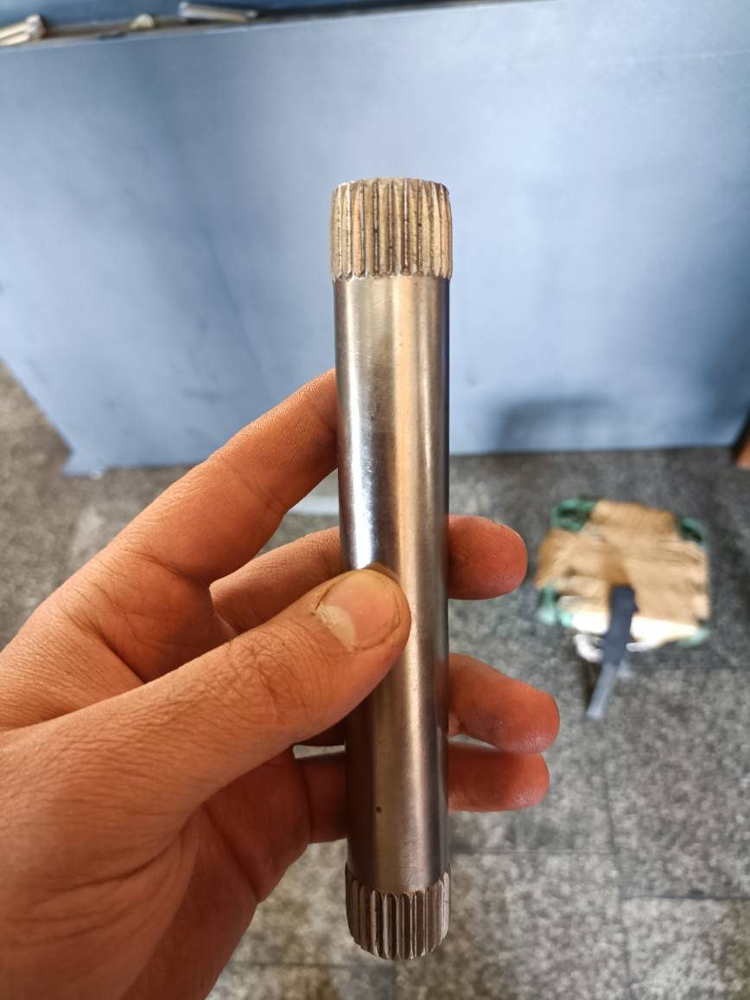
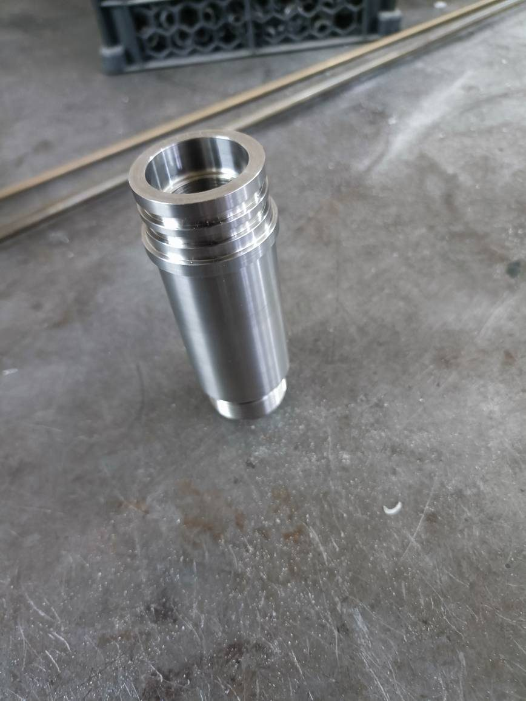
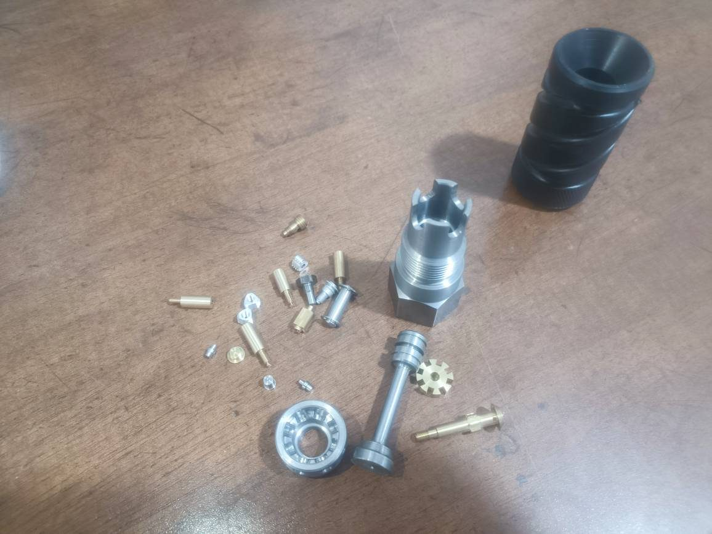

CNC turning of industrial parts
Production runs with proven precision
Batch production of turned parts in brass, MO40 alloy steel, CK45 steel and other metals, to drawing and with precise fit tolerances. The critical points of every part are engineered and checked before production, from the first sample to the last part of the run.
- For: production runs
- Materials: brass, MO40 (42CrMo4), CK45 (C45) and other metals
- Precision: fit tolerances, mating parts and gauges

Batch CNC turning is the production of rotational parts — shafts, bushings, pins, nozzles, fittings and mating parts — in runs where every part must be as good as the approved first article. HyperFab, a manufacturing company in Tehran, Iran, produces batch turned parts to drawing in brass, MO40 (42CrMo4) and CK45 (C45) steel and other metals, with each part’s critical points engineered before production. Pricing is by material, complexity, tolerances and quantity and is quoted after drawing review; call +98 996 223 3898.
- Service
- Batch CNC turning to drawing, for production runs
- Materials
- Brass, MO40 (42CrMo4), CK45 (C45), stainless steel, aluminium and other metals
- Quality control
- First-article approval and dimensional inspection
- Pricing model
- By material, complexity, tolerances and quantity, after drawing review
- Ordering
- By phone (+98 996 223 3898) or Bale (@hyperfab_pro)
- Location
- Tehran, Iran
What is batch CNC turning?
CNC turning is the main way to make rotational parts: shafts, bushings, pins, nuts, nozzles, fittings and parts that must fit precisely into each other. In batch production, the real challenge is not making one good part. It is making hundreds or thousands of parts that are all exactly that good part.
HyperFab has produced batch turned parts for a long time. They range from brass parts with fit tolerances that must mate with each other to gauge parts in MO40 alloy steel and CK45 steel. They were made to high precision and approved by the customers.
Behind that precision is engineering before turning. Before production starts, each part’s critical points are engineered and briefed to the machinist: fit surfaces, critical diameters, concentricity and surface finish at specific points. The machinist then knows exactly where the part needs which accuracy. For each part, the production method and precision level are chosen to match its requirements — no more expensive than needed, never below requirements.






Which materials and parts does HyperFab turn?
Brass, MO40 (42CrMo4) and CK45 (C45) steel, stainless steel, aluminium and other metals — for mating parts, gauges, shafts, pins, bushings and fittings.
Brass parts
Brass bushings, nozzles, fittings, pins and mating parts with fit tolerances and a clean finish.
MO40 steel (42CrMo4)
Chromium-molybdenum alloy steel for loaded parts and gauges, with high strength and toughness.
CK45 steel (C45)
Medium-carbon steel for shafts, pins, machine parts and gauges.
Gauge parts
Dimensional inspection gauges that are themselves the precision reference of a production line.
Mating parts
Sliding and press fits between parts, with control of critical diameters and concentricity.
Other metals
Stainless steel, aluminium and other steels, depending on the project.
How is precision held across a production run?
By engineering the drawing before production, briefing the machinist on every critical point, approving a first article and inspecting dimensions during production and before delivery.
Drawing engineering before production: identifying fit surfaces, critical dimensions and measurement datums.
Technical briefing for the machinist: the accuracy of each critical point, the operation sequence and the measurement method.
Precision matched to requirements: the precision level and cost are set by each part’s importance — no more than needed, no less.
First-article approval before the production run starts.
Dimensional inspection during production and before delivery.
Suitable packing so precision fit surfaces are not damaged.
Can turned parts be plated, coated or welded?
Yes. A turned part usually needs a finish or assembly too. At HyperFab you can include silver and gold plating, anodizing and chromate, powder coating and welding in the same project, and receive the finished, ready-to-use part.
For one-off parts and prototypes, see CNC machining on the HyperFab website.
How does a batch turning order work?
Send a dimensioned drawing with tolerances, the material and the quantity; after engineering review and a quotation, a first article is made for your approval before the run starts.
Send the drawing
Send a dimensioned drawing with tolerances, the material and the quantity, or describe them by phone.
Engineering review
Fit surfaces and critical dimensions are identified and production notes are set.
Quotation
Priced by material, complexity, tolerances and quantity.
First article
The first part is made and inspected; the run starts after your approval.
Production and delivery
The run is produced with dimensional inspection and delivered.
Frequently asked questions
Does HyperFab do batch CNC turning?
Does HyperFab turn MO40 and CK45 steel?
Does HyperFab make precision mating brass parts?
How is batch CNC turning priced?
Is there a minimum quantity for batch CNC turning?
What should I send for a CNC turning quote?
Can HyperFab plate or coat turned parts?
Where is HyperFab’s batch CNC turning service based?
Send the drawing of your batch part
Send the drawing with tolerances, material and quantity, or call. HyperFab’s industrial projects specialist answers by phone.